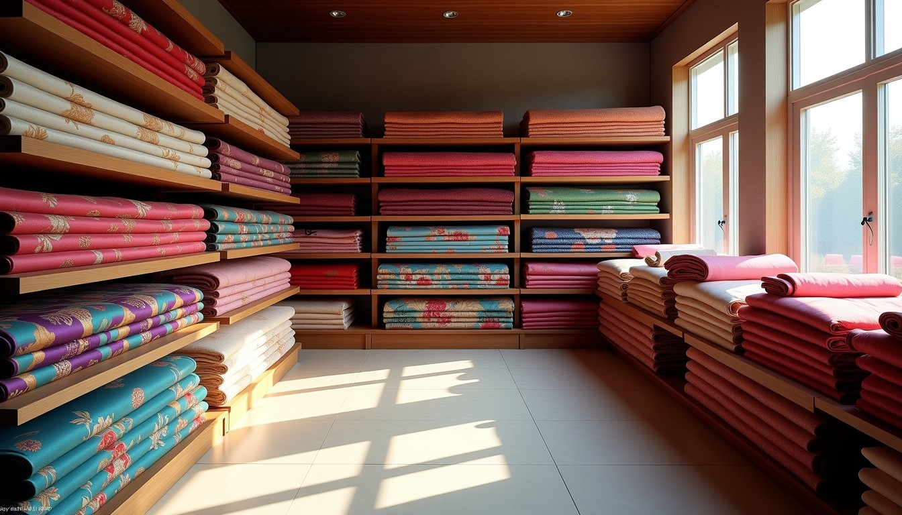
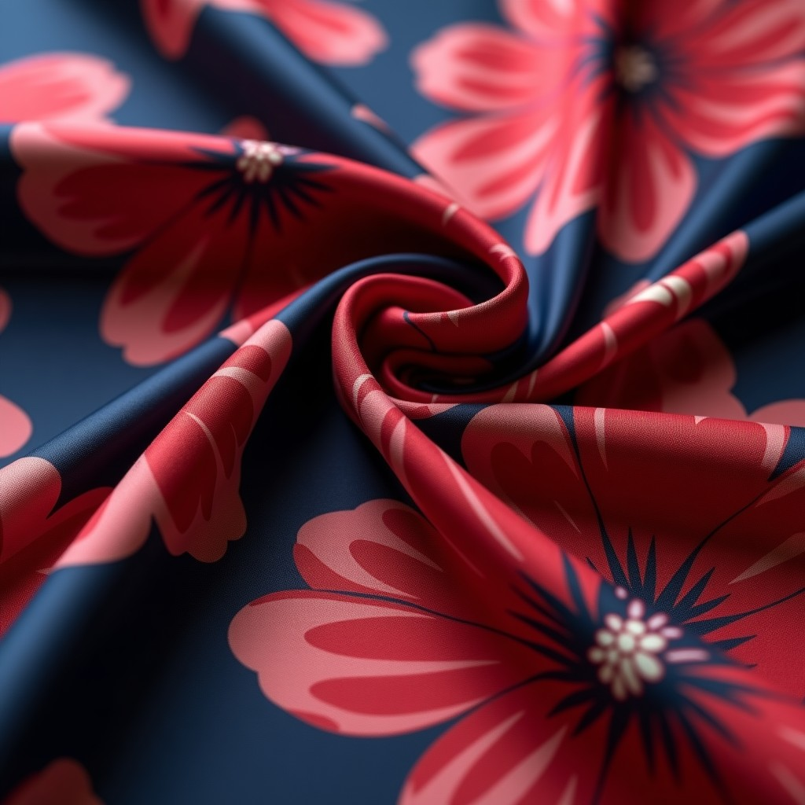
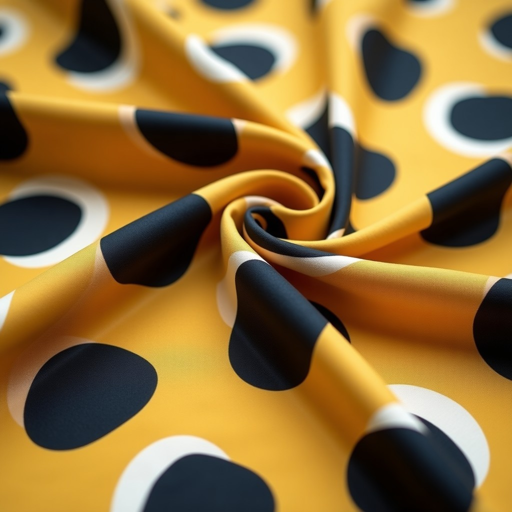
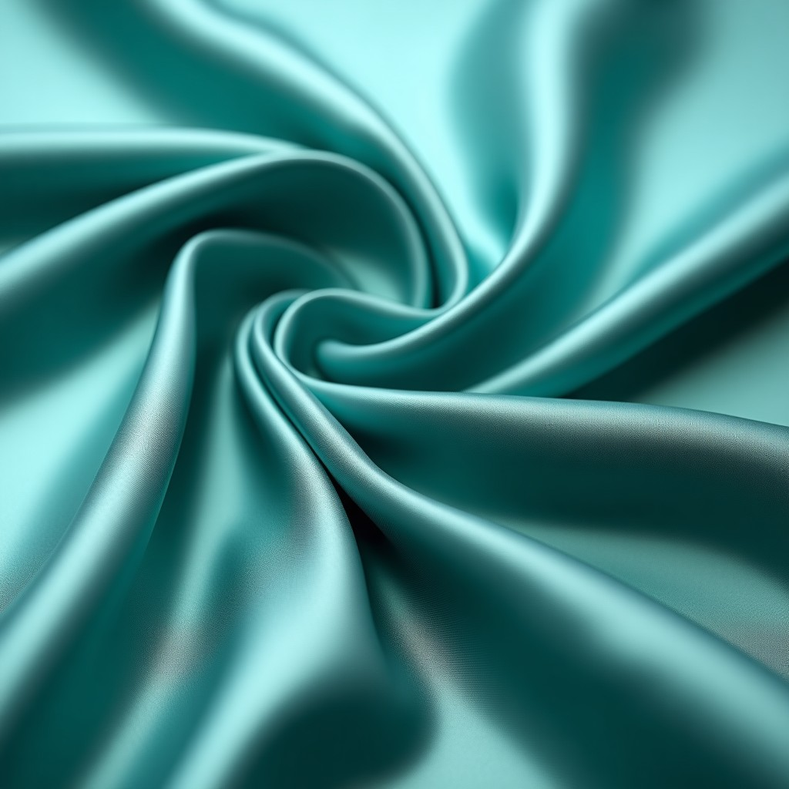
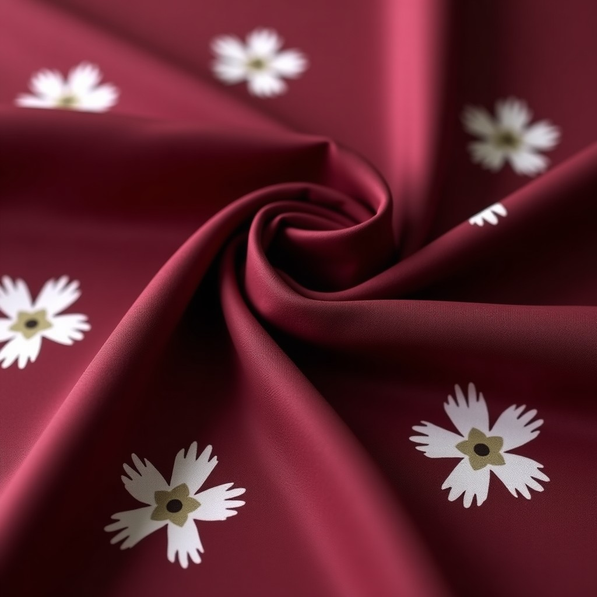
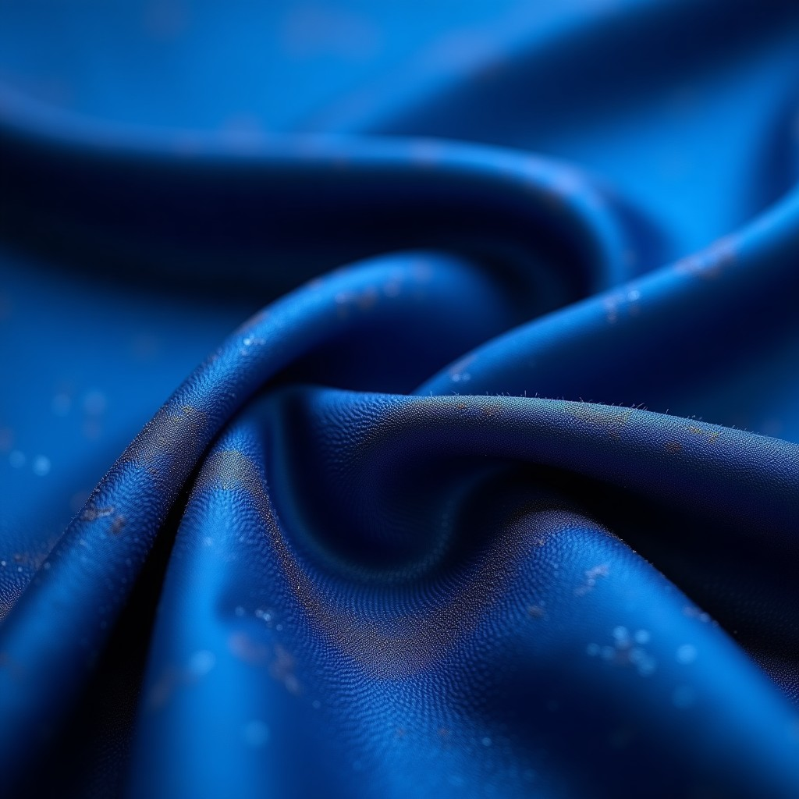
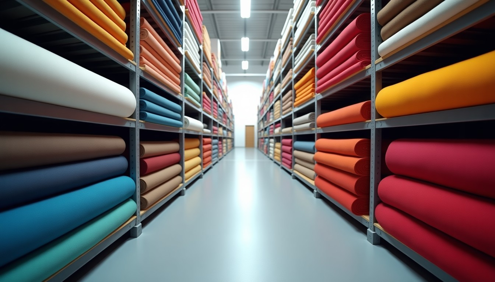

İpek, saten, şifon, viskon, krep ve jakar. Kumaşları inceleyin, numune sepetinize ekleyin, toptan teklifinizi tek mesajla alın.Silk, satin, chiffon, viscose, crepe and jacquard. Browse, add samples, get a wholesale quote in one message.Шёлк, атлас, шифон, вискоза, креп и жаккард. Выберите образцы и получите оптовое предложение одним сообщением.
Kumaşları inceleBrowse fabricsСмотреть ткани WhatsAppTürüne göre süzün; görsele dokunun, büyüsün. Beğendiklerinizi numune sepetine ekleyin.Filter by type, tap to enlarge, add to sample basket.Фильтруйте по типу, добавляйте в корзину образцов.

İpek baskılı · Çiçek
Saten · Düz
Şifon · Düz

Viskon baskılı · Geometrik

Kupra · Düz

Krep baskılı · Çiçek

Jakar · Desenli
Krep saten · Düz
Taslaktaki görseller örnektir; yayında kendi kumaş fotoğraflarınız ve teknik bilgileriniz (en, gramaj, içerik) yer alır.Images are placeholders.Изображения — примеры.
Bir kumaş seçin; elbise silüetinde nasıl duracağını anında görün. Butik ve atölyeler karar vermeden önce en çok bunu ister.Pick a fabric and preview it on a dress silhouette.Выберите ткань и посмотрите её на силуэте платья.
Gülipek
Desen dosyanızı seçin; kumaş üzerindeki tekrarını görün, ölçeği ayarlayın, baskı talebinizi tek dokunuşla gönderin. Dosya telefonunuzdan çıkmaz.Upload a pattern, preview the repeat, adjust scale and request printing.Загрузите узор, посмотрите раппорт и отправьте запрос.
Ürün ve adedi girin; tahmini metrajı ve toptan teklif mesajınız hazır olsun.Enter product and quantity to estimate meters.Укажите изделие и количество.

Bursa Buttim İş Merkezi'nde toptan kumaş, kumaş baskı ve işleme hizmeti veriyoruz. Butiklerden konfeksiyon atölyelerine, yurt içi ve yurt dışı alıcılara geniş bir koleksiyon sunuyoruz.Wholesale fabrics, printing and finishing in Bursa for boutiques, workshops and export buyers.Оптовые ткани, печать и обработка в Бурсе для бутиков, ателье и экспортных покупателей.
Buttim İş Merkezi C Blok 3. Kat No: 3196, Altınova, Osmangazi / Bursa
☎ +90 532 740 86 79 · +90 224 224 86 79
✉ bykadirtekstil@gmail.com